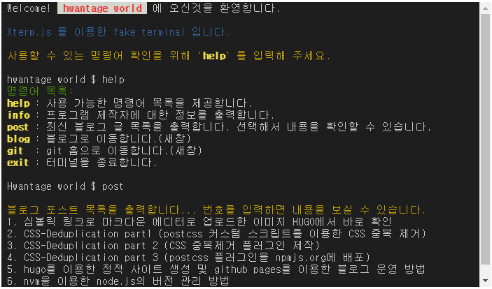
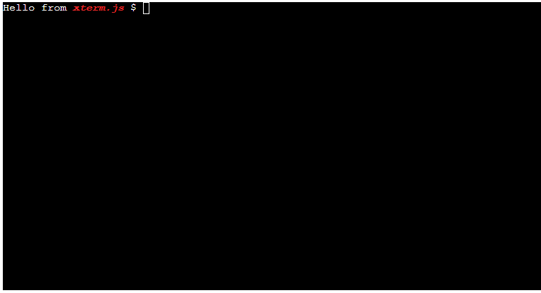

Xterm.js 를 이용한 fake terminal 웹 제작

Xterm.js 를 이용하여 웹 사이트에 fake terminal 을 구현합니다.
데모를 확인해보세요. DEMO
시작하기
먼저, 모듈을 설치해야 합니다. npm을 통해서만 제공 되므로 다음을 실행하여 xterm.js를 해당 모듈을 종속성으로 추가해야 합니다.
npm install xterm
루트에 index.html 파일을 만들고 다음과 같이 코딩합니다.
/index.html:
<!DOCTYPE html>
<html>
<head>
<link rel="stylesheet" href="node_modules/xterm/css/xterm.css" />
<script src="node_modules/xterm/lib/xterm.js"></script>
</head>
<body>
<div id="terminal"></div>
<script>
var term = new Terminal();
term.open(document.getElementById("terminal"));
term.write("Hello from \x1B[1;3;31mxterm.js\x1B[0m $ ");
</script>
</body>
</html>
브라우저를 통해 index.html 파일을 실행하면 다음과 같은 결과를 확인할 수 있습니다.

코드 작성 방법
xterm 의 공식 문서에서 사용가능한 Method 를 확인하고 원하는 기능을 구현합니다.
기본적으로 모든 키보드와 출력 메시지를 javascript 로 하나 하나 구현하여 xterm 모듈을 통해 출력하도록 처리하면 됩니다.
본 프로젝트에서 사용한 method의 목록은 다음과 같습니다.
- open : 원하는 html 객체에 터미널을 생성합니다.
- write : 텍스트를 출력합니다.
- writeln : 텍스트를 라인단위로 출력합니다.
- onKey : 키보드 입력 이벤트를 처리합니다.
- focus : 터미널 커서를 포인트 합니다.
- dispose : 터미널을 dispose 합니다.
스타일링
ANSI Escape 코드를 이용하여 글자색, 전경색 등을 스타일링 할 수 있습니다. ANSI 이스케이프 코드 는 터미널을 제어하는데 사용되는 표준입니다.
**16진수 값으로 \x1B 또는 8진수 값으로 \033 인 Escape문자로 시작**하고 아래의 코드표를 참고하면 됩니다.
ANSI color code
| color code | 기능 |
|---|---|
| [0m | 모든 색과 스타일 초기화 |
| [1m | 굵게(bold) / 밝게 |
| [3m | 이탤릭체(italic) |
| [4m | 밑줄(underline) |
| [7m | 반전(글자색/배경색을 거꾸로) |
| [9m | 가로줄 치기 |
| [22m | 굵게(bold) 제거 |
| [23m | 이탤릭체(italic)제거 |
| [24m | 밑줄(underline)제거 |
| [27m | 반전 제거 |
| [29m | 가로줄 제거 |
| [30m | 글자색: 검정 |
| [31m | 글자색: 빨강 |
| [32m | 글자색: 초록 |
| [33m | 글자색: 노랑 |
| [34m | 글자색: 파랑 |
| [35m | 글자색: 마젠트(분홍) |
| [36m | 글자색: 시안(청록) |
| [37m | 글자색: 백색 |
| [39m | 글자색으로 기본값으로 |
| [40m | 바탕색: 흑색 |
| [41m | 바탕색: 적색 |
| [42m | 바탕색: 녹색 |
| [43m | 바탕색: 황색 |
| [44m | 바탕색: 청색 |
| [45m | 바탕색: 분홍색 |
| [46m | 바탕색: 청록색 |
| [47m | 바탕색: 흰색 |
| [49m | 바탕색을 기본값으로 |
사용법 및 사용 예

출처 : https://velog.io/@octo__/ANSI-color-code